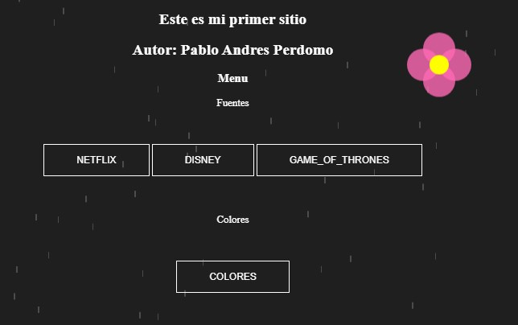
Este es mi primer sitio web, conociendo temas como contenedores y etiquetas de HTML mientras avanzaba.
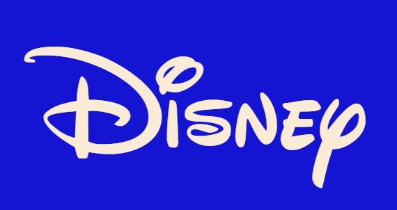
Recreación del logo de Disney.
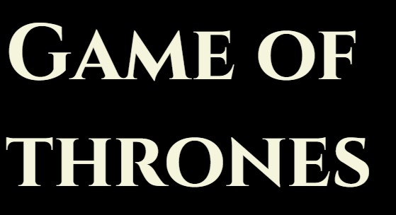
Recreación del logo del juego Game Stone.
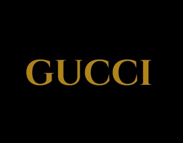
Recreación del logo de Netflix.
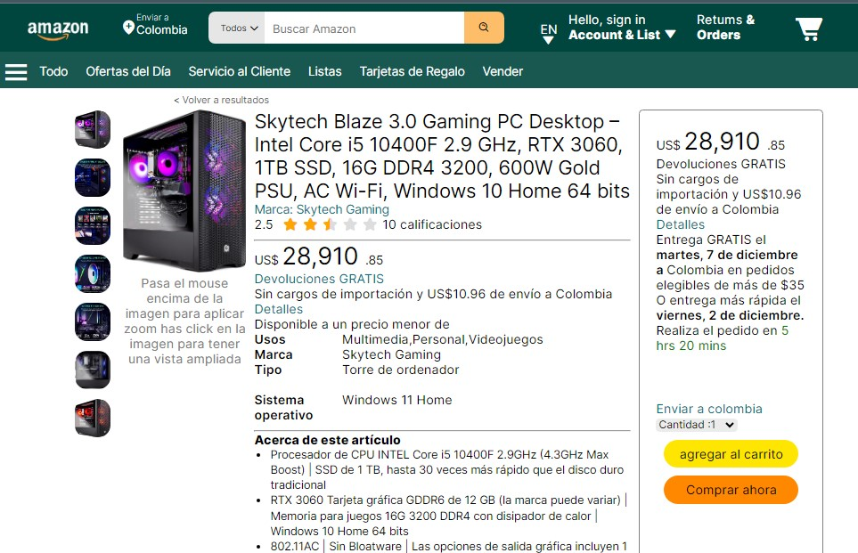
Una vista de Amazon creada con CSS, HTML y JS; solo es interfaz.
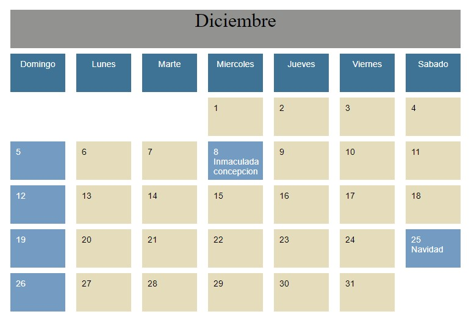
Esto es un calendario con la vista aplicando gráficos.
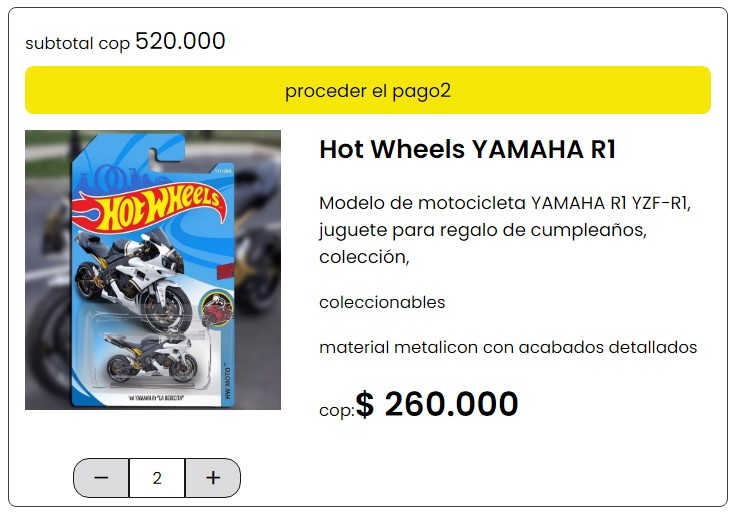
Estoy usando conocimientos básicos de JS para que aumente el valor según la cantidad; está hecho con CSS y JS.
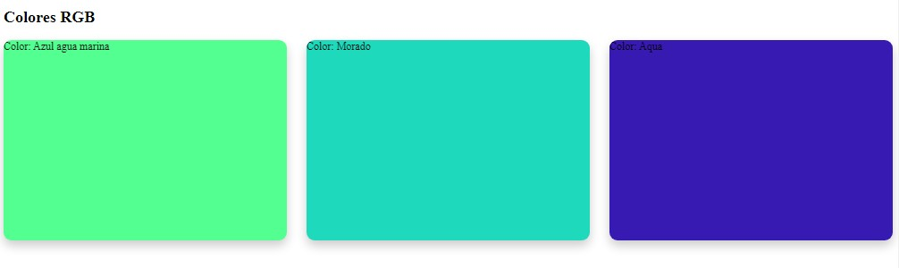
Conociendo los colores RGB hexadecimales.
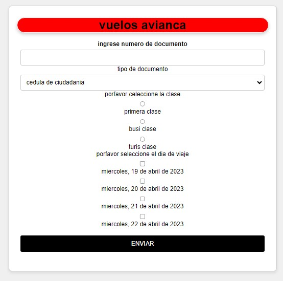
Conociendo qué es un formulario y cómo se hace.
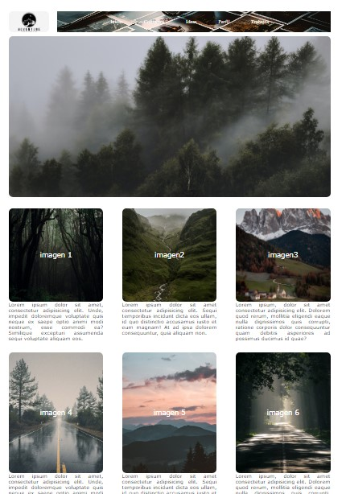
Conocimiento de cómo mostrar una maqueta usando los conocimientos previos en este tema.
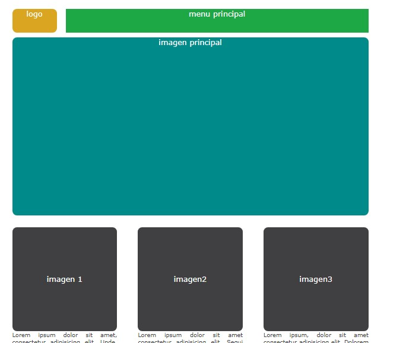
Prototipado de una maqueta interactiva para la presentación de proyectos de diseño gráfico y desarrollo web.
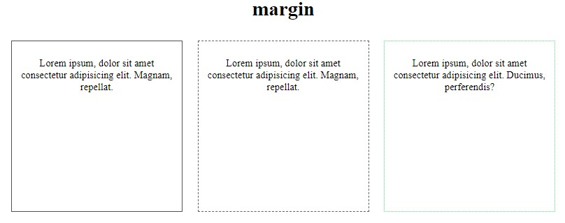
Cómo se manejan los márgenes y qué márgenes existen.
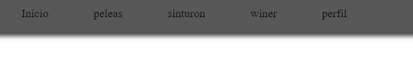
Primer menú hamburguesa.
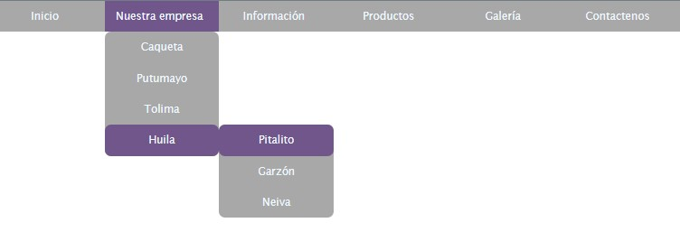
Primer menú hamburguesa..
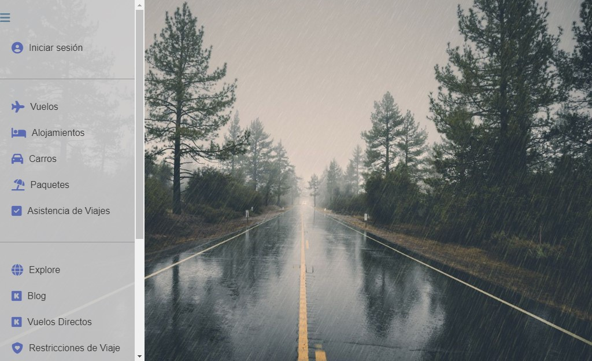
Creación de menús de navegación innovadores utilizando iconos vectoriales y técnicas de diseño centradas en la experiencia del usuario.
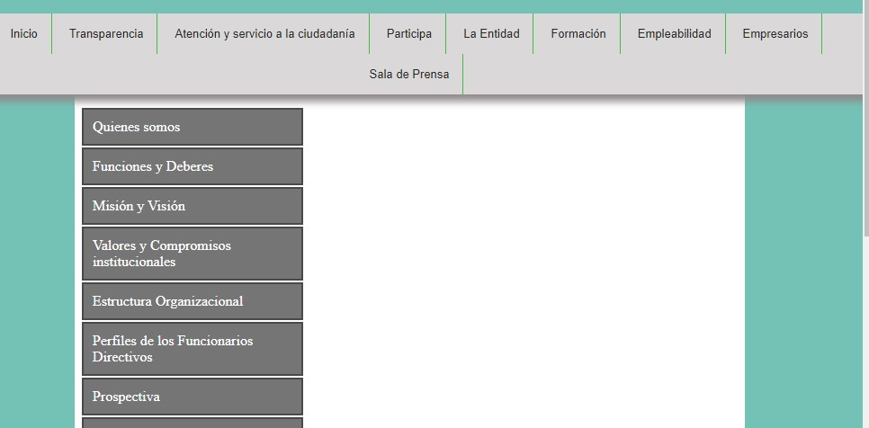
Implementación de menús de navegación con efectos de desplazamiento suave y resaltado dinámico de secciones activas.
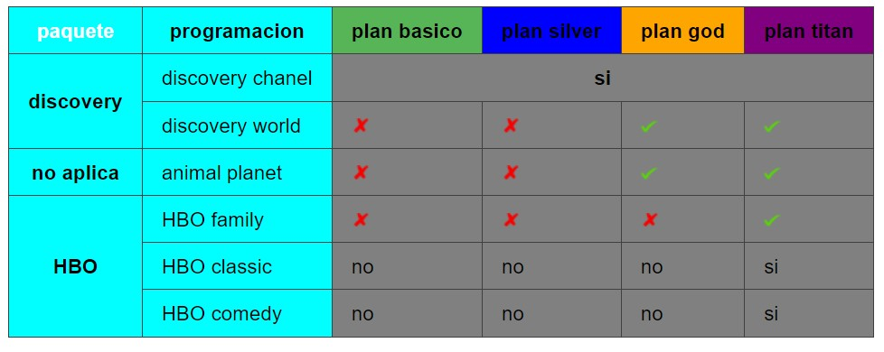
Cómo hacer una tabla con CSS y HTML.
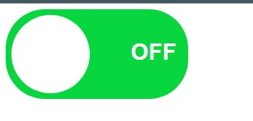
Integración de interruptores de alternancia personalizables para mejorar la interactividad y la accesibilidad en interfaces de usuario.